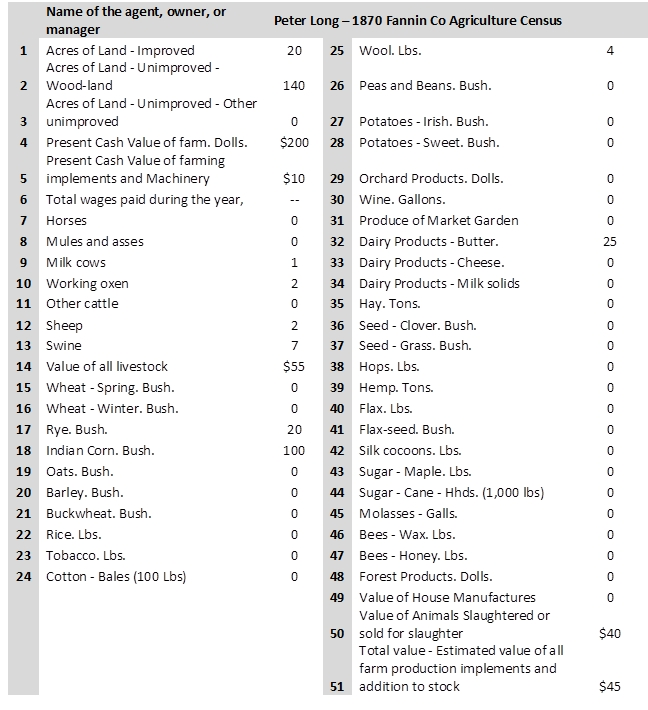
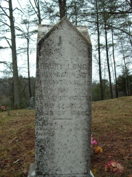

|
James Long II of Burke NC > Peter Long of Fannin GA
This page last updated 30 May 2014
Peter Long
born abt 1793 likely in Cabarrus Co NC. He first appears in
census in 1820 Burke NC, about age 27 with family. The family
moved to Union Co GA from Burke NC around 1846-48. He died between
1870 and 1880.
According to the 1870
Fannin Co Georgia census, Peter Long Sr was born in North
Carolina about the year 1793. However, the exact date of his
birth is unknown. In 1793, his father James Long Jr and wife
Delila were living in Cabarrus County NC on land that 1 year
earlier was found within the boundary of Mecklinburg County.
The family were members of the Meadow Creek Baptist church in
Cabarrus County. In 1799, the son of John Reed, a Long family
neighbor, discovered gold on the nearby Little Meadow Creek.
His discovery set off the first gold rush in the United States.
Reed became relatively affluent from his discovery, and likely
many of the locals panned and mined creek beds all over the area,
including the Long family. But many years later, on 28 December
1814, Peter's mother and father sold their 50 acres and moved
the family west to Burke County NC, in what coincidentally in
1828 would become another booming gold mining area.
Burke County NC
Peter Long Sr first appeared in official Burke County records
as a taxable adult in Capt Glafoe's district in 1817, and then
again in 1819. He was not taxed on any land owned at the time.
Peter married Nancy Mashburn prior to his 27th birthday in 1820.
The exact date of their marriage is not known, but the fact Peter
married Nancy is proven in the 1838 Burke County estate record
of Nancy's father Drury Mashburn. In the 1820
Burke County census, Peter Long's young family consisted
of himself, his wife and one young son (note: the family is enumerated
twice in 1820, showing the addition of a young daughter in the
duplicate record).
Peter Long's household was skipped in the 1830 Burke County
census, although he was taxed without land in Captain Morris'
district along with his father and brothers for the same year.
Peter periodically appeared in Burke County tax and voter records
in the 1830s and then reappeared in the 1840
Burke County census (see also page
2) with 3 sons and 7 daughters. Census records state the
family was living on the South side of the Catawba River, the
West side of the North Fork. This was the North
Muddy Creek area of western Burke County. In 1840, his son
Drury Long who was born in 1810 in Burke County was about 27
years old (sic), married, and also enumerated in the Burke Co
census. Peter Long would have been about 47 years old at that
date. Unfortunately, the Burke County courthouse was burned twice,
the first time in 1825 and then again in 1856. Most deed and
court records prior to these dates are lost. A few estate inventories
survived during the early period of Burke County including one
for Neely
Finley, a neighbor of the Longs in the North Muddy Creek
area. Peter Long is shown owing the estate 50 cents "by
school article" as of 30 July 1834.
By 1840, Peter's brother James Long III had already moved
to North Georgia, where land had opened for settlement, and once
again, in an area where gold was discovered a decade earlier.
Their father James Long Jr died in McDowall County in 1842/43.
His last will and testament was probated in July 1843. McDowall
had been formed as a separate county from Burke in 1842. The
rest of the Long family, including Peter, moved to North Georgia
soon thereafter. Peter disappeared from Burke County tax records
after 1841.
Fannin County NC
Peter Long is first observed in official Georgia records when
on 9 Novembeer 1846 he paid Isaac N Gee $50 for Lot
283, Section 1 District 7 in Union County (see the land mapped to a current
location). Peter Long Sr and two sons Drury Long and Peter
Long Jr were taxed in District 844 in the 1849
Union County tax lists. Peter Sr. was taxed for the same
160 acres of land, District 7, Lot 283, that he purchased from
isaac Gee in 1846, but was not taxed as a poll due to his advanced
age, which would have been about 56 by 1849. The 1850
Union County tax list provides more information about the
land taxed for District 7/283 stating Peter Sr held 140 acres
of "Pine Land" and 20 acres of "3rd quality oak
and hickory upland". Peter paid a tax of 14 cents for that
year. (see also a plat map
showing Long properties located in Fannin County)
Peter Sr. and his household were once again skipped when census
enumeraters surveyed Union County for the 1850 federal census.
This event is particulary devastating to our understanding of
the family, because 1850 is the first census to itemize individual
names in households. The family appeared next in the 1860
Fannin County census after that county was formed from land
in Union County in 1854. They were enumerated in the Stockhill
Post Office area. But by then, Peter Long was 67 years old, his
wife Nancy was 66, and all of their children had left the family
household; Therefore, the names of most of Peter and Nancy's
children, specifically their many daughters are unconfirmed;
The family lived in the foothills of the Blue Ridge Mountains,
in an area of southern Fannin County near the Gilmer County boundary.
The nearby communities were known as Dial and Stockhill and traversed
by the Noontootla Creek. The nearest market town was Elijay Georgia,
located about 20 miles west just across the Gilmer County line
via winding wilderness dirt roads, many of which are yet improved
to this day. Peter was listed in the census as a farmer holding
land worth $300 and personal property worth $200.
Long family tradition tells that confederate home guards burned
Drury Long's house during the Civil War. So afterward, many of
the Longs abandoned the Confederate army, travelled to Nashville
and enlisted in the Union army. Following the War, the US government
required all southern males to swear an oath of allegiance. In
1865 Peter Long Sr signed the oath saying he was 75 year old
(b 1790), with gray hair, gray eyes, dark complexion and was
6 feet tall. All of Peter's sons, Drury, Peter Jr (who signed
on a different page) John M., and Henry also signed the oath.
Peter and Nancy were still alive ten years later, appearing
in the 1870 Fannin
County census as a farmer with land worth $200 and personal
property worth $100. A James Long, age 30, who is undoubtedly
the younger son of Peter and Nancy, is helping on the farm and
living in Peter's household with his own wife and young son.
The 1870 Fannin
County agriculture census (see also page
2) provides a valuable window on the farming life engaged
by the elderly Peter Long and wife. The agriculture census for
that year shows that Peter farmed 20 acres of improved land,
and held an additional 140 acres of woodlands, the same total
acreage shown over the years in various county tax records. By
1870, he was clearly a subsistence farmer raising crops and livestock
only to the extent that allowed his family to survive.

On 5 February 1876, Peter Long Sr, sold his homeplace of 160
acres, Lot #284 (sic,
not 283), District 7, Section 1 to James Long "Jr"
(see also page 2).
Peter sold his land to his son James Long Jr for only $20, a
very small amount of money, which probably indicated that the
son would become responsible for the maintenance of his elderly
father and mother - if she was alive at the time. The deed which
Peter signed by mark rather than by signature stated that Peter
had lived on the property for 22 years. The deed did not include
the signature of his wife Nancy who would have been age 82, so
she may have been deceased by 1876. Neither Peter nor Nancy Long
appear in the 1880 census suggesting they died prior to that
date.
It is not known where Peter and Nancy Long are buried, but
two candidates are Dial Church of Christ Cemetery where Peter's
brother Levi and Peter's son Henry are buried and Stockhill Cemetery
where Peter's son Drury Long is buried; However, some descendants
living in Fannin County have stated that both Peter and Nancy
are buried at Tilly Church Cemetery.
The Peter Long Sr Family
Peter Long, Sr - born about 1793 in Mecklinburg Co NC
(later Cabarrus County); died after 1876 in Fannin County GA
married Nancy Mashburn prior to 1820, likely in Burke
County NC, daughter of Drury Mashburn of Burke Co NC
children (according to census profiles)
2(i). Drury Long
born about 1809 in Morganton, Burke, NC (tombstone says 1810);
Named after his grandfather Drury Mashburn; He was a soldier
in Co E of the 1838 Cherokee removals; He died May 17, 1877 in
Fannin, GA; buried Stockhill Cem, Fannin GA
 "My grandmother
says that her uncle George Long was shown a silvermine by his
grandfather when he was a young boy . That would have been Drury
C. Long or Peter Garrett. The grandfather used the silver to
buy tobacco. I think it may have been Drury Long, because Drury
had loaned money to Peter Garrett, who also was his nephew, to
move to Missouri. Peter had never paid Drury back according to
claims made on his will. Also, the mine was located in an area
nearer to where the Long's were buried. Of course, all the area
is national forest now."
"According to a family tale, at least what I can remember
of it, while Drury and George were serving the CSA, some Home
Guards came through looking for recruits. They burned several
houses, including Drury's house, raped some of the neighborhood
women and killed a boy when he couldn't tell where his father
was. About this time Drury and George was arriving home on furlow.
I'm not sure exactly how it happened, but the neighborhood men
along with Drury and George tracked some of the home guards down
to the river and at about sundown, attacked them. One of the
men was able to hide-out all night in the river, but they waited
on him and the next morning he was caught. He soon gave the names
of the other soldiers and was shot. The other soldiers were tracked
down and killed, the last being the one who killed the boy. I
was told that the man begged them all for mercy, but the boy's
father said "I reckon you aint no better than my boy was"
and he shot him dead right on his front porch. After that, George
and his brothers Peter, Joseph, and William all went together
to Nashville, Tennessee to join the Union Army. One of the brothers
had to be ferried across the Tennessee river on a log by his
brothers because he couldn't swim. Another William Long that
I suspect to have went with them, served in the same unit with
2 of the brothers and is buried in the same community."
married Margaret "Peggy" Garrett, sometime before
the 1840 census; She was born 1 Feb 1808, Morganton, Burke, North
Carolina; She died 6 Sep 1881, Newport, Fannin, Georgia. She
was a daughter of Joseph Garrett and Sarah Stroud of Burke Co
NC
2(ii). Unknown Female Long b 1810-1820
2(iii).Unknown Female Long b 1820-1825
2(iv). Unknown Female Long b 1820-1825
2(v). Unknown Female Long b 1820-1825
2(vi). Peter
Long Jr born about 1826 in Burke Co NC; He lived in Murray
GA in 1860 census and Marshall County AL in 1870 and 1880 census.
Died Sunday, March 18, 1900; He is buried Beulah Cemetery Albertville
AL
Obituary: Guntersville Democrat March 22, 1900 "Marshall.
Uncle Peter Long died Sunday after a long illness. He was one
of the oldest citizens of this county and was a consistant member
of the Baptist church. The bereaved family have the sympathy
of the entire community."
married Amanda Jane Rhoades (unknown date) in Fannin Co GA;
She was born about 1826 in South Carolina; she died 20 Mar 1912
in Marshall Co AL, age 86y 7m 6d
2(vii). Unknown Female Long b 1830-1835
2(viii). Unknown Female Long b 1830-1835
2(ix). James Marion
Long born about 1833 likely in Burke Co North Carolina;
He served in Co H in the 5th Mounted Tennessee Infantry (Union)
during the Civil War. He is living in the household of his parents
Peter and Nancy Long in 1870 Fannin census; He purchased the
Long homeplace from his father in 1876 for only $20 likely indicating
that he would then be responsible for the care of his elderly
parents. His widow Matilda sold this land (Sec 7, lot 283) to
son Peter Long in 1919. They were living at Rock Creek, Stockhill
Fannin Co in 1880 and 1900; Census records show many different
dates of birth. He applied for an invalid veteran's pension in
1912.
James Marion Long had a brother named Peter Long because
according to the family history passed down Peter (P.E.Long)
was named after his uncle Peter Long. P.E. Long and his wife
Sarah Loretta Bailey left Georgia and went to Fort Payne Alabama
where they are buried;
married Matilda E. Gee, the daughter of Isaac Gee; She petitioned
for a Civil War veteran's widow pension in 1931
2(x). Unknown Female Long b 1835-1840
2(xi). Unknown Female Long b 1835-1840
2(xii). William
Henry Long born~1835 likely in Burke Co NC; Farmer, living
at the Morganton PO area of Fannin Co GA in 1870 census; He nor
his wife Susan could read or write according to the census; Noontootla
PO in 1880; Daughter-in-law Sary C and grandson John H Long,
age 6 months, also living with William and Susan in 1880; He
died 13 May 1903 in Fannin Co GA; buried Dial Cem Fannin GA;
He is listed here because his son John Lafeyette Long was
known as a "first cousin" of Newton Long, son of Peter
Long Jr
married Susannah Free on February 27, 1859 in Fannin County
GA.She was born 1844. She is buried Myrtletree Cemetery Albertville
Marshall County AL, "mother of John L. Long"
Census Profile: Peter Long Sr.
| |
1820 Burke NC |
1830 Burke NC |
1840 Burke NC |
1850 Union GA |
Family |
| Male |
age 16-26 |
skipped |
age 40-50 |
skipped |
Peter Long Sr b
1793 |
| Female |
age 16-26 |
|
age 40-50 |
|
wife Nancy Mashburn b 1794 |
| Male |
age 0-10 |
|
Burke NC census
age 20-30 |
Union GA census, age 37 |
son Drury Long
b 1813 (tombstone: 1810) |
| Female |
age 0-10 |
|
gone |
|
dau |
| Female |
|
|
age 15-20 |
|
dau married 1840s |
| Female |
|
|
age 15-20 |
|
dau married 1840s |
| Female |
|
|
age 15-20 |
|
dau married 1840s |
| Male |
|
|
age 10-15 |
|
son Peter Long
Jr b 1826 |
| Female |
|
|
age 5-10 |
|
dau married ~1850 |
| Female |
|
|
age 5-10 |
|
dau married ~1850 |
| Male |
|
|
age 5-10 |
|
son James Long
Jr b 1833 |
| Female |
|
|
age 0-5 |
|
dau married late 1850s |
| Female |
|
|
age 0-5 |
|
dau married late 1850s |
| Male |
|
|
age 0-5 |
|
son William
Henry Long b 1835 |
Research into stray Female Longs in
Union and Fannin Co GA
Union Co GA Early Marriages - Long females
(prior to 1860 census)
| LONG, Nancy married ASHE,
Nelson 15 Oct 1843 |
dau of Levi and Eliz Long |
|
| LONG, Mary married SHADWICK,
Peter 29 Nov 1844 |
UNKNOWN PARENTS |
NO GUESS. Husband is CHADWICK
From Genforum: " The information was written on a piece
of paper attached to the backside of his son's photo. The note
describes how Peter went off to fight for the Confederate side
of the war and while he was away, his wife died leaving children
14 and under to fend for themselves. The 8 yr old son, James
Mattison, would take baked goods his sister would bake down to
the train station and sell them to soldiers on the trains. There
was a baby who was taken in by neighbors who later moved away
and the child was separated from his family for the rest of his
life only reuniting after hearing through a church grapevine
about his brother. They met up when they were old men with grandchildren
and immediately recognized their family resemblance on sight."
1850 Union census "Elizabeth" |
| LONG, Debba married THOMAS,
John 9 Feb 1846 |
UNKNOWN PARENTS |
possibly Elizabeth "Thompson"
dau of James and Uly Long |
| LONG, Nancy married JOHNSON,
Thomas 18 Oct 1849 |
UNKNOWN PARENTS |
NO GUESS, she may be Nancy
Johnson age 25 living in Berry HH without husband in 1850 census |
| LONG, Eliza Caroline married
SWIM, Aaron H. 20 Jan 1850 |
dau of Charles R and Rutha Long |
|
| LONG, Erter [Ester?] married
GARRETT, John 14 Feb 1850 |
UNKNOWN PARENTS |
NO GUESS, she is age 19 in
1850 census w/new husband; born abt 1831 |
| LONG, Lucinda married SHIMFORD,
James 13 Mar 1853 |
dau of Levi and Eliz Long |
|
| LONG, Margaret married WILSON,
Boyd 25 Sep 1853 |
dau of Levi and Eliz Long |
|
| LONG, Nancy Eliza married
BERRONG, Henry M. 13 Oct 1853 |
UNKNOWN PARENTS |
this is LLOYD, not LONG (confirmed) |
| LONG, Elizabeth E. married
WARD, Van V. 30 Sep 1854 |
UNKNOWN PARENTS |
possibly dau of Barnard Long |
| LONG, Polly married SELF, David
20 Dec 1855 |
UNKNOWN PARENTS |
possibly dau of James and Uly
Long |
| LONG, Sarah married SWAFFORD,
Robert L. 7 Aug 1856 |
UNKNOWN PARENTS |
possibly dau of James and Uly
Long |
Fannin Co GA Early Marriages - Long females
(prior to 1860 census)
| LONG Jain married Levi BROOKSHIRE 4 Nov
1856 |
dau of Levi and Eliz. Long |
|
| LONG Fanny married David LOVELL 20 November
1864 |
UNKNOWN PARENTS |
possibly dau of William and Anna Long |
| LONG C.C. married Peter H. Underwood 11
January 1866 |
dau of James and Uly Long |
|
OBITUARY - Mrs. Mae Bell LONG KINDALL, 93, of Route 1,
Talking Rock (GA), died Monday, Oct. 5, 1998, in the Mountainside
Nursing Center in Jasper. She was born Feb. 7, 1905 in Fannin
County, the daughter of the late Peter LONG and Dovie TILLEY
LONG. She was retired from Gold-Kist and was a member of Morganton
Baptist Church. She was preceded in death by her husband, Dave
KINDALL, two sons, Spurgeon and W. L. KINDALL; and a daughter
Laura Mae BANKS. Survivors include one son, E. J. KINDALL of
Ypsilanti, Mich.; two daughters, Mary Nell CHESTER of Chatsworth
and Louise HIGHTOWER of Talking Rock; five brothers, Mack, Roy
and Dee LONG, all of Ellijay, Grady LONG of Michigan and Ed LONG
of Knoxville, Tenn.; two sisters, Mary Lee MULLINAX of Ellijay
and Annie HOSEA of Michigan; and 17 grandchildren, 41 great-grandchildren
and 6 Great-great-grandchildren. Services will be Thursday at
11 a.m.from Town Creek Baptist Church with the Revs. Bobby TIMMS
and Larry KINDALL officiating. Music will be by Bobby and Susan
TIMMS. Burial will be in the church cemetery. Bernhardt Funeral
Home of Ellijay is in charge of funeral arrangements. This announcement
is a courtesy of PEEPLES Funeral Home of Chatsworth. ----------Taken
from The Dalton Citizen News, Dalton, Whitfield County, GA.
|